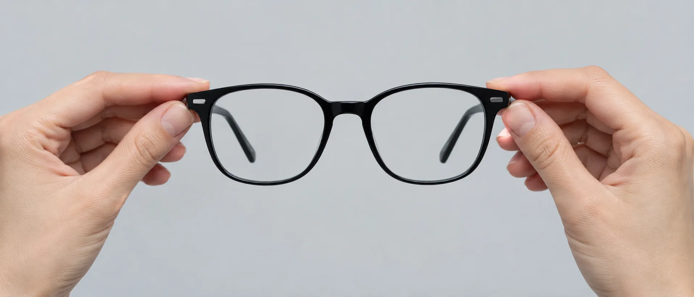
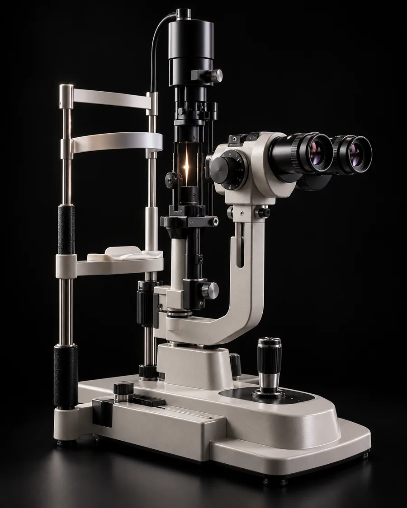

dr Monika Szczygłowska-Uramowska
Okulistka
Badanie dna oka, pomiar ciśnienia w oku, recepta na okulary i soczewki, diagnostyka jaskry GDx PRO, konsultacje okulistyczne dzieci.
Umów onlineMakieta, wersja D · Strona główna · Diagnostyka jaskry · Optyk dla dzieci · Marka TREE Kolorystyka: Ultramaryna · Turkus · Zieleń
5,0 na podstawie 223 opinii o naszej okulistce na ZnanyLekarz


Salon: pon.–pt. 10–18, sob. 10–14. Gabinet okulistki: [dni i godziny]
Pomiary centrowania w salonie. Partner Essilor Varilux [do potwierdzenia].
Więcej o progresachNa badania zapisujemy telefonicznie, do okulistki także online. [ceny do potwierdzenia]
Prowadzi je optometrystka Joanna Subdys. Trwa [czas do potwierdzenia]. Soczewki kontaktowe zdejmij co najmniej godzinę przed badaniem.
Jak pracujesz, ile czasu spędzasz przy ekranie, co Ci przeszkadza w obecnych okularach.
Autorefraktometr mierzy wadę w kilka sekund. To punkt wyjścia, nie gotowa recepta.
Foropter, kaseta szkieł próbnych i tablica: porównujesz szkła, aż obraz jest ostry.
Lampa szczelinowa. Jeśli coś budzi wątpliwości, proponujemy wizytę u okulistki.
Najpierw rodzaj szkieł do Twojego dnia, potem oprawa, która na nie pasuje.
Okulistka
Badanie dna oka, pomiar ciśnienia w oku, recepta na okulary i soczewki, diagnostyka jaskry GDx PRO, konsultacje okulistyczne dzieci.
Umów onlineOptometrystka
Bada wzrok dorosłych i dzieci, dobiera szkła i soczewki kontaktowe, uczy ich zakładania.
Zadzwoń: 42 630 28 30
Daleko, ekran i czytanie w jednych okularach. Pomiary centrowania robimy w salonie, a pierwsze dni noszenia omawiamy przy odbiorze.
Zapytaj o progresy
Dobór soczewek z nauką zakładania (200 zł). Soczewki systematycznej wymiany, także progresywne, zamawiamy w salonie.
Umów dobór soczewekLogotypy z obecnej strony salonu; lista marek do potwierdzenia.